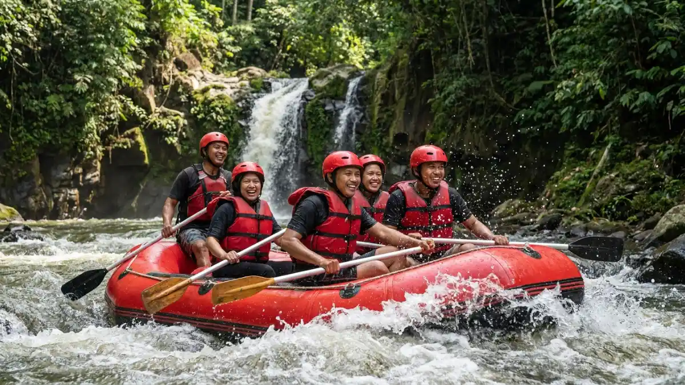

Rafting Kasembon adalah aktivitas arung jeram di Sungai Sumber Dandang, Kecamatan Kasembon, Kabupaten Malang, yang menjadi alternatif populer selain rafting di kawasan Batu. Artikel ini membahas rute, paket, harga, dan opsi variasi seperti rafting Probolinggo.
DAFTAR ISI
- 1. Apa Itu Rafting Kasembon?
- 2. Bagaimana Rute dan Durasi Pengarungan Rafting Kasembon?
- 3. Apa Saja Paket dan Kisaran Harga Rafting Kasembon?
- 4. Apa Perbedaan Rafting Kasembon dengan Rafting di Batu?
- 5. Kapan Waktu Terbaik untuk Rafting Kasembon?
- 6. Bagaimana Rafting Probolinggo Bisa Jadi Opsi Variasi?
- 7. Apa Saja Kesalahan Umum Saat Memilih Trip Rafting?
- 8. Apa Tips Praktis Sebelum Mengikuti Rafting Kasembon?
- 9. Kesimpulan
- FAQ
1. Apa Itu Rafting Kasembon?
Rafting Kasembon adalah wisata arung jeram yang memanfaatkan aliran Sungai Sumber Dandang di Desa Bayem, Kecamatan Kasembon, Kabupaten Malang, sebagai lintasan utamanya.
Kawasan ini dikenal sebagai salah satu destinasi arung jeram yang cukup mudah dijangkau dari Kota Malang maupun Kota Batu, sehingga sering menjadi pilihan bagi wisatawan yang sudah mencoba rafting di Batu dan ingin merasakan pengalaman di sungai lain.
Karakter arus di Sungai Sumber Dandang umumnya digambarkan cukup bersahabat untuk pemula, namun tetap memberikan sensasi memacu adrenalin melalui rangkaian jeram dan pemandangan alam di sepanjang sungai.
Selain sebagai aktivitas rekreasi, rafting di kawasan ini juga sering dikaitkan dengan pengembangan wisata berbasis alam di wilayah Kasembon, yang melibatkan pemandu lokal dan fasilitas pendukung seperti area basecamp dan transportasi menuju titik start.
2. Bagaimana Rute dan Durasi Pengarungan Rafting Kasembon?
Rute rafting Kasembon umumnya membentang sepanjang 7,5 hingga 8 kilometer di Sungai Sumber Dandang dengan waktu tempuh sekitar dua jam pengarungan.
Sepanjang rute ini, peserta akan melewati beberapa titik jeram dengan tingkat kesulitan yang bervariasi, diselingi bagian sungai yang lebih tenang sehingga peserta dapat menikmati pemandangan tebing dan vegetasi di sekitar aliran sungai.
Durasi total kegiatan, termasuk briefing keselamatan dan persiapan, biasanya lebih panjang dari waktu pengarungan itu sendiri karena mencakup instruksi penggunaan peralatan seperti pelampung, helm, dan dayung.
Bagi peserta pemula, penting untuk mengikuti arahan pemandu secara penuh selama briefing karena kondisi arus sungai dapat bervariasi tergantung musim dan curah hujan.
3. Apa Saja Paket dan Kisaran Harga Rafting Kasembon?
Rafting Kasembon umumnya menawarkan beberapa jenis paket, seperti family trip, adventure trip, dan night trip, dengan kisaran harga yang bervariasi tergantung fasilitas yang disertakan.
Secara umum, paket-paket tersebut sudah mencakup pemandu, peralatan keselamatan, tim rescue di sepanjang rute, transportasi lokal dari basecamp ke titik start, hingga fasilitas tambahan seperti welcome drink dan makan setelah kegiatan selesai.
Harga dapat bervariasi tergantung operator, musim, dan promo yang berlaku, sehingga sebaiknya dikonfirmasi langsung ke penyedia jasa sebelum melakukan reservasi.
Paket dengan opsi malam hari (night trip) biasanya menyasar peserta yang sudah berpengalaman dan menginginkan sensasi arung jeram dengan suasana berbeda, karena membutuhkan pencahayaan tambahan dan tingkat kewaspadaan lebih tinggi.
4. Apa Perbedaan Rafting Kasembon dengan Rafting di Batu?
Perbedaan utama rafting Kasembon dengan rafting di kawasan Batu terletak pada lokasi sungai, karakter arus, dan jarak tempuh dari pusat kota.
Rafting di Batu umumnya memanfaatkan aliran sungai yang lebih dekat dengan area wisata utama kota, sehingga aksesnya relatif singkat.
Sementara itu, rafting Kasembon berada di wilayah yang sedikit lebih jauh, namun menawarkan suasana sungai dengan nuansa alam yang masih cukup alami.
Wisatawan yang sudah pernah mencoba rafting di Batu sering menjadikan Kasembon sebagai destinasi lanjutan untuk merasakan variasi arus dan pemandangan yang berbeda tanpa harus menempuh perjalanan terlalu jauh dari Malang.
Pemilihan antara keduanya biasanya bergantung pada preferensi waktu perjalanan, tingkat pengalaman peserta, dan jenis paket yang ditawarkan masing-masing operator.
5. Kapan Waktu Terbaik untuk Rafting Kasembon?
Waktu terbaik untuk rafting Kasembon umumnya adalah pagi hingga siang hari saat debit air relatif stabil dan cuaca masih cerah.
Musim kemarau sering dianggap lebih ideal karena kondisi arus cenderung lebih dapat diprediksi, meski setiap penyedia jasa biasanya tetap memantau kondisi cuaca dan debit air harian sebelum memberangkatkan peserta.
Pada musim hujan, arus sungai dapat meningkat sehingga sebagian operator memilih menunda atau membatalkan jadwal demi keselamatan.
Sebaiknya wisatawan menghubungi operator terlebih dahulu untuk mengecek jadwal operasional dan kondisi sungai terkini sebelum berangkat, terutama jika bepergian dari luar kota.
6. Bagaimana Rafting Probolinggo Bisa Jadi Opsi Variasi?
Rafting Probolinggo di Sungai Pekalen menjadi opsi variasi menarik bagi wisatawan yang sudah mencoba Kasembon dan ingin merasakan karakter arus yang berbeda.
Sungai Pekalen di kawasan Probolinggo dikenal memiliki tingkat kesulitan yang secara umum digambarkan setara grade 2 hingga 3.
Dengan kedalaman dan lebar sungai yang bervariasi di sepanjang rute, diselingi bebatuan besar dan beberapa air terjun kecil yang menambah daya tarik visual.
Karakter arus ini membuat rafting Probolinggo sering dipilih oleh peserta yang menginginkan tantangan sedikit lebih tinggi dibandingkan rute yang lebih tenang.
Jarak tempuh menuju Probolinggo dari kota-kota besar di Jawa Timur, seperti Surabaya.
Umumnya membutuhkan waktu tempuh darat yang lebih panjang dibandingkan menuju Kasembon dari Malang, sehingga faktor waktu perjalanan perlu dipertimbangkan saat merencanakan kunjungan.

Wisata arung jeram di Sungai Pekalen, Probolinggo. (Ilustrasi)7. Apa Saja Kesalahan Umum Saat Memilih Trip Rafting?
Kesalahan umum saat memilih trip rafting antara lain tidak mengecek kondisi kesehatan pribadi, mengabaikan briefing keselamatan, dan memilih paket tanpa memastikan kelengkapan fasilitasnya.
Beberapa peserta juga sering meremehkan pentingnya pakaian yang sesuai, seperti alas kaki khusus air dan pakaian yang cepat kering, sehingga kurang nyaman selama kegiatan berlangsung.
Selain itu, tidak mengonfirmasi jadwal dan kondisi cuaca sebelum berangkat dapat menyebabkan kekecewaan apabila trip harus ditunda atau dibatalkan mendadak.
Memilih operator tanpa memeriksa reputasi, standar keselamatan, dan ketersediaan tim rescue juga menjadi risiko yang sebaiknya dihindari, terutama bagi peserta yang baru pertama kali mencoba arung jeram.
8. Apa Tips Praktis Sebelum Mengikuti Rafting Kasembon?
Tips praktis sebelum mengikuti rafting Kasembon meliputi menjaga kondisi fisik, mengikuti instruksi pemandu, dan membawa perlengkapan pribadi yang sesuai.
Peserta disarankan untuk sarapan secukupnya sebelum kegiatan, mengenakan pakaian yang nyaman dan cepat kering, serta membawa pakaian ganti untuk setelah rafting selesai.
Selama pengarungan, penting untuk selalu mengikuti arahan pemandu terkait posisi duduk, cara memegang dayung, dan tindakan yang harus dilakukan apabila perahu terbalik.
Bagi peserta dengan riwayat kondisi kesehatan tertentu, seperti masalah jantung atau pernapasan, sebaiknya berkonsultasi terlebih dahulu dengan dokter sebelum mengikuti aktivitas fisik yang cukup intens seperti arung jeram.
9. Kesimpulan
Rafting Kasembon menawarkan pengalaman arung jeram yang relatif mudah diakses dari Malang dengan rute sekitar 7,5-8 kilometer dan durasi sekitar dua jam.
Bagi yang menginginkan variasi arus dan tantangan berbeda, rafting Probolinggo di Sungai Pekalen bisa menjadi opsi lanjutan yang layak dipertimbangkan.
Pastikan untuk selalu mengecek kondisi cuaca, memilih operator terpercaya, dan mengikuti seluruh instruksi keselamatan sebelum memulai kegiatan.